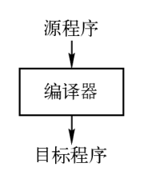
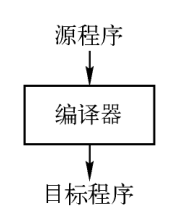

《编译原理》课件搬运 ——> 源地址
1.1 编译器作用
编译器（Compiler）
- 读入以某种语言（源语言）编写的程序；
- 输出等价的用另一种语言（目标语言）编写的程序；
- 通常目标程序是可执行的；
 

解释器（Interpreter）
- 不生成目标程序，直接根据源程序的语义执行源程序中指定的操作；
- Java语言的处理结合了编译(.class字节码)和解释，Python会将编译的字节码(pyc)存放于_pycache_(可跨平台部署，一定程度防源码泄露，import的py不变pyc就不变[检查py和pyc的修改时间是否一致])
1.2 编译器的结构
编译器可以分为分析部分和综合部分
分析（analysis）部分 / 前端（front end）
- 把源程序分解成组成要素，以及相应的语法结构；
- 使用这个结构创建源程序的中间表示；
- 同时收集和源程序相关的信息，存放到符号表；
综合（synthesis）部分 / 后端（back end）
- 根据中间表示和符号表信息构造目标程序；
前端部分是机器无关的，后端部分是机器相关的；
编译器分成执行顺序的一组步骤：

1.3 词法分析
词法分析/扫描（lexical analysis/scanning）
- 读入源程序的字符流，输出为有意义的词素（lexeme）
- <token-name, attribute-value>
- token-name：由语法分析步骤使用；
- attribute-value：指向相应的符号表条目，由语义分析/代码生成步骤使用；
例子
position = initial + rate * 60
<id, 1> <=, > <id, 2>, <+, > <id, 3> <*, > <number, 4>
1.4 语法分析
语法分析/解析（syntax analysis/parsing）
- 根据各个词法单元的第一个分量来创建树型的中间表示形式，通常是语法树（syntax tree）
- 中间表示形式指出了词法单元流的语法结构；

1.5 语义分析
语义分析（semantic analysis）
- 使用语法树和符号表中的信息，检查源程序是否满足语言定义的语义约束；
- 同时收集类型信息，用于代码生成、类型检查、类型转换；

1.6 中间代码生成
根据语义分析输出，生成类机器语言的中间表示；
三地址代码（three-address code）
- 每个指令最多包含三个运算分量；很容易生成机器语言指令；

1.7 中间代码优化
通过对中间代码分析，改进中间代码的质量；（更快、更短、能耗更低）

1.8 代码生成
把中间表示形式映射成目标语言；（寄存器分配、指令选择）

1.9 其他
- 符号表管理：记录源程序中使用的变量的名字，收集各种属性；
- 编译器构造工具：扫描器（Lex）、语法分析器（Yacc）、语法制导的翻译引擎；
- 程序设计语言的新发展向编译器设计者提出新的要求
- 设计相应的算法和表示方法来翻译和支持新的语言特征，如多态、动态绑定、类、类属 (模板) 、…
- 编译器设计者还需要更好地利用新硬件的能力
- RISC技术、多核技术、大规模并行技术
1.10 程序设计语言的基础概念
- 静态/动态：
- 静态：支持编译器静态决定某个问题；
- 动态：只允许在程序运行时刻作出决定；
- 作用域：
- x的作用域指程序文本的一个区域，其中对x的使用都指向这个声明；
- 静态作用域（static scope）: 通过静态阅读程序可决定；
- 动态作用域（dynamic scope）: 运行时确定x的指向；
- 环境与状态：
- 环境（environment）: 是从名字到存储位置的映射；
- 状态（state）: 从存储位置到它们值的映射；